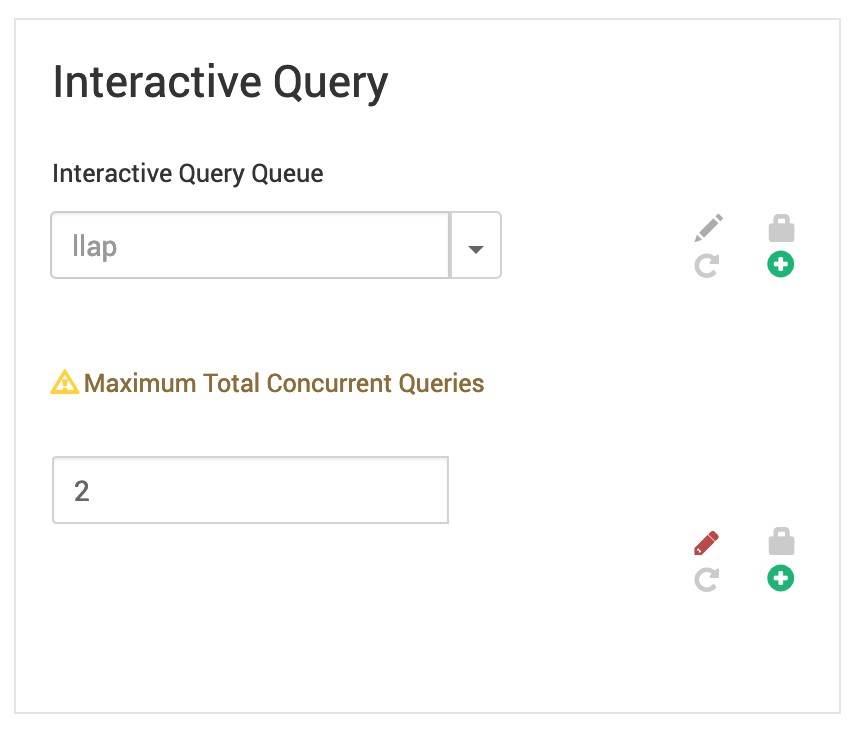
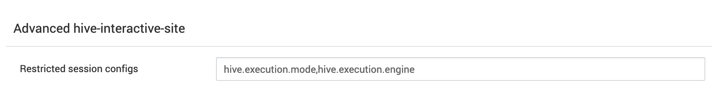
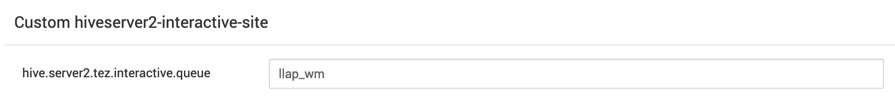
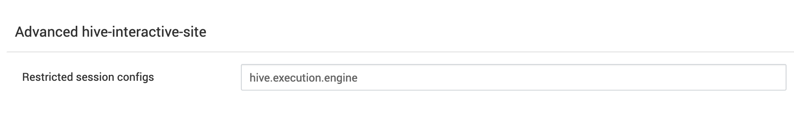
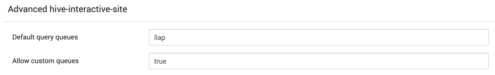

'Right Pathing' Alternate Workloads while using HiveServer2 Interactive (LLAP)
A few assumptions: HDP 3.1.4 and Ambari have been used to work through these scenarios. If you’re running different versions, additional tweaks may be required.
Hive LLAP is a great way to speed up analytical queries. The caching layer and immediate task allocation model provides performance that is competitive and often faster than other traditional EDW solutions.
LLAP’s caching layer uses an LFRU (Less Frequently Recently Used) eviction model to manage it’s caching layer. The caching layer is shared across user sessions in LLAP, which means data cached by one user/session is available to another user/session. The caching model is a significant advantage over session-scoped caches you’ll get with other big data query engines.
From a practical standpoint, LLAP is best suited for BI, discovery, and dashboard-type queries. These queries share common datasets and need to respond quickly because there is usually a user waiting on the other end.
While perfectly capable, using LLAP for ETL/ELT isn’t the best use of this elevated resource. Moving massive amounts of data through LLAP doing ELT/ELT work has a few effects:
- Fills cache with datasets that aren’t benefiting anyone downstream.
- Forces eviction of cached elements that ‘are’ benefiting other users.
- Consumes resources used by a community with stricter SLA’s, when the ETL/ELT community has different SLA standards.
Problem
So what can you do when your attached to HS2i and want to run an ETL/ELT job, which is a long-running job that doesn’t require the resources of LLAP, or you want to be a courteous user and leave some of those LLAP resources for someone else? It would be perfectly fine to run your query in the traditional HS2 environment, but you can’t/don’t want to connect to another environment just to run the query.
Solution
Well, HS2i can launch jobs into containers instead of the default ‘llap’ environment. Therefore, saving LLAP resources and ‘right pathing’ your workload.
HS2i can be configurated to allow sessions to override the ‘execution mode’ of a query. When a session is created, and a query is run, the execution mode can not be changed. Another session must be created.
hive.execution.mode
This setting is found in several places (in Ambari) and is used by a ‘session’ to determine where a query will be executed. Options are:
- container
- llap
As with all settings we’ll mention in this article, make sure you are reviewing/setting the values that are appropriate for the environment your in. For example: In Ambari and LLAP, see the ‘hive-interactive-*’ sections.
The hive.execution.mode setting is set and defaults to the appropriate mode for the environment. Meaning, ‘container’ is set for the ‘HS2’ environment, and ‘llap’ is set for the ‘HS2i’ environment. We do NOT want to make this change at the environment level. We will only change this at the session level.
Some Caveats
With Workload Management Enabled
You can NOT request an alternate YARN queue to run. All ‘container’ execution mode queries will run in the ‘Workload’ queue defined by
hive.server2.tez.interactive.queue.
Without Workload Management Enabled
You CAN request an alternate YARN queue to run ‘container’ mode requests in.
Controls
Session Level Settings
After adjusting a few environment settings to allow an ‘alternate’ execution mode, the execution path is controlled by the session. Users wanting to use the ‘alternate’ path will declare the alternate path before launching the job. If nothing is specified, jobs will run in LLAP. As I mentioned before, once a query has been run in a session, the execution mode for that session can NOT be changed. Doing so will result in an error. A new session is required, if they wish the change the execution mode.
Environment Level Settings (Defaults)
Note the sections for each of these settings. Ambari has the same settings in many areas to control different deployments of Hive Server2.
LLAP Daemon and Concurrency Settings (Default)

What’s interesting is that the default configuration runs the LLAP daemons AND the concurrency AM in the same queue. But this isn’t necessary, as we’ll see later.
LLAP Execution Restrictions (Default)

We’ll change this restriction to allow users to set the hive.exection.mode later in the options section.
LLAP Interactive Queue

The ‘interactive’ setting needs to be set to enable Workload Management. The Workload Management AM will run in the defined queue. These AM’s represent each concurrent query (capability) for LLAP. That concurrency is defined by the aggregate of the parallelism configured for Workload Management. See this example script as a guide for starting Workload Management. It is not controlled via the concurrency settings we’ve seen before (hive.server2.tez.sessions.per.default.queue).
Environment Level Setting Changes
- Remove the
hive.execution.modevalue from “Restricted session configs” (hive.server2.tez.sessions.restricted.configs)

Allow Custom Queues by changing
ignoretotruehive.server2.tez.sessions.custom.queue.allowed=true

Optional Environment Setting Tweaks (Queues)
These settings have more to do with where you want parts of the system to run (which queues).
hive.server2.tez.default.queuescontrols where the Concurrency AM’s will run when Workload Management is NOT enabled.
hive.llap.daemon.queue.namecontrols where the LLAP environment will run.
hive.server2.tez.interactive.queuecontrols where the Workload Management AM’s will run, when Workload Management is activated.
Options
The behavior changes a bit, depending on whether you’re using Workload Management or not. My suggestion is to NOT enable Workload Management at first to see what lands in which queue. Once you activate Workload Management, you will NOT be able to launch jobs in container mode outside the queue setup in hive.server2.tez.interactive.queue .
Option #1 - Without Workload Management
Scenario: Run LLAP and Concurrency AM’s in the same queue. Allow users to specify an alternate queue to run container mode jobs.
When jobs are launched in container execution mode, YARN will allocate task resources alongside the AM controlling the ‘DAG.’ So where ever you launch the AM for the job, that queue will need resources to run the job.
Environment
hive.server2.tez.sessions.restricted.configs=hive.execution.engine
hive.server2.tez.sessions.custom.queue.allowed=true
Unset (To disable Workload Management)
hive.server2.tez.interactive.queue
Session Level
Set via Hive/Beeline Init, Script, or JDBC connection string.
set hive.execution.mode=container
set tez.queue.name=<target_queue>
Launch the query and check the Resource Manager. You should see the AM in the target queue, and that application in YARN will grow additional containers to run the job.
Option #2 - Without Workload Management
Scenario: Run LLAP and Concurrency AM’s in different queues. Allow users to specify an alternate queue to run container mode jobs.
When jobs are launched in container execution mode, YARN will allocate task resources alongside the AM controlling the ‘DAG.’ So where ever you launch the AM for the job, that queue will need resources to run the job.
Environment
hive.server2.tez.sessions.restricted.configs=hive.execution.engine
hive.server2.tez.sessions.custom.queue.allowed=true
hive.server2.tez.default.queues=llap_tez_am
hive.llap.daemon.queue.name=llap
Unset (To disable Workload Management)
hive.server2.tez.interactive.queue
Session Level
Set via Hive/Beeline Init, Script, or JDBC connection string.
set hive.execution.mode=container
set tez.queue.name=<target_queue>
Launch the query and check the Resource Manager. You should see the AM in the target queue, and that AM in YARN will grow additional containers to run the job.
Option #3 - With Workload Management
Scenario: LLAP and Workload Management AM in different queues. Users will NOT be able to specify an alternate queue. The Workload Management AM will grow to fulfill the DAG request. The YARN queue hive.server2.tez.interactive.queue will need to be large enough to contain the other Workload Management AM’s in addition to the job requirements. If the queue is small and the other Workload AM’s have not been allocated or reclaimed during a quiet period, new jobs may not launch right away.
Environment
hive.server2.tez.sessions.restricted.configs=hive.execution.engine
hive.server2.tez.sessions.custom.queue.allowed=true
-- Utilitization of 'llap_tez_am' should be nil with Workload Management
hive.server2.tez.default.queues=llap_tez_am
hive.llap.daemon.queue.name=llap
Set (To enable Workload Management). There’s more to do for Workload Management, which isn’t covered here.
hive.server2.tez.interactive.queue=llap_wm
Session Level
Set via Hive/Beeline Init, Script, or JDBC connection string.
set hive.execution.mode=container
Launch the query and check the Resource Manager. You should see the AM in the target queue (llap_wm), and that AM in YARN will grow additional containers to run the job.